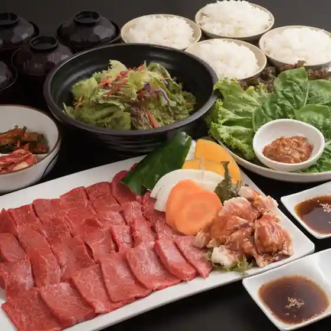
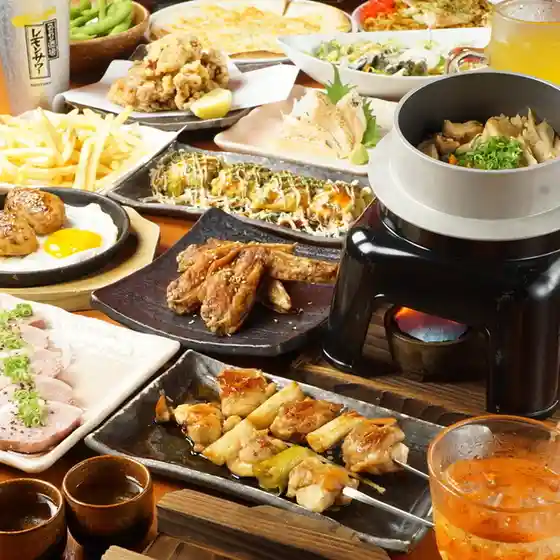
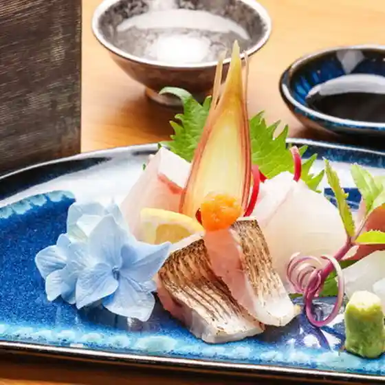
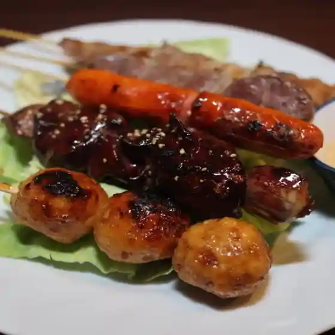
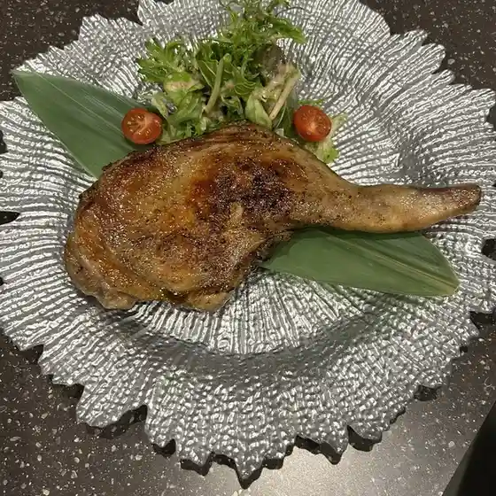
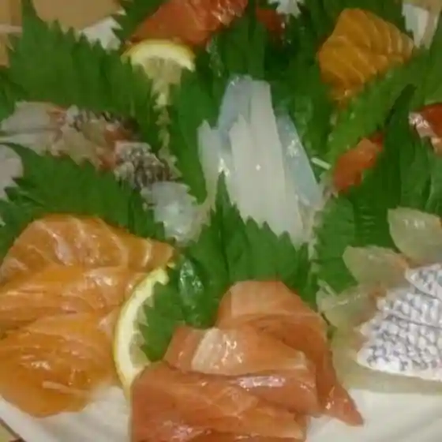
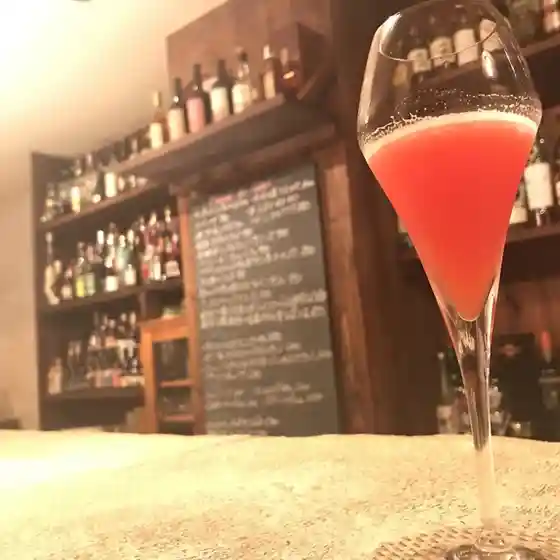
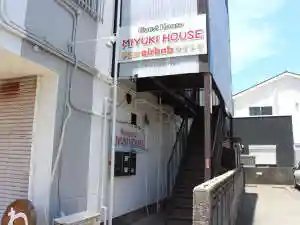
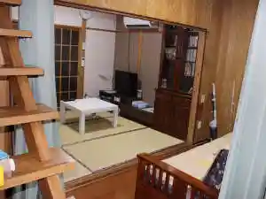
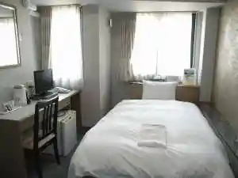

Kasuga
Kasuga · Fukuoka
Kasuga
Highlighted on the Fukuoka map.

Sights
Hakataminamieki
Shinkansen no Mie Ru Oka (Kasuga Nishi Tamokuteki Hiroba Park)

Nakoku no Oka History Museum (Nakoku no Oka Rekishi Park)

Kasuga Shrine (Kasuga)

Ken'ei Kasuga Park

Nichi Hai Tsuka Burial Mound
Shirozu Oike Park
Sugu (Sugu) Okamoto Iseki
Utoguchi Kawaragama Tenjikan (Kasuga no Bori Kama Taiken Plaza)
Sumiyoshi Shrine (Kasuga)
Kido Saketen
Shirozu Ike
Mizu Castle Ruins (Dai Tsuchii Mizu Castle Ruins)
Supuringuhoru (Kasuga Fureai Bunka Center)
Suitei Kasuga Dorui (Kasuga Shrine)
Dining
焼肉 伽耶
Yakiniku Kaya

ニパチ 春日原店
Nipachi Kasugabaru Mise

日本料理あぜま
Nihonryouri Azema

焼きとり心ちゃん
Yaki Tori Kokoro Chan

炭香 みな川
Sumi Kaori Mina Kawa

焼鳥居酒屋ウエスタン
Yakitori Izakaya Uesutan

Music Cafe&Bar ROOTS
Music Cafe&Amp;Bar Roots

アルパッソ
Arupasso

八仙閣 春日店
Hassen Kaku Kasuga Mise
春日ばるっこ
Kasuga Barukko
十徳や 春日下白水店
Jittoku Ya Kasuga Shimoshirouzu Mise
優 春日店
Yuu Kasuga Mise
銘酒処 炉端焼きへのへのもしじ
Meishu Tokoro Robata Yaki Henohenomoshiji
焼き肉 春ちゃん
Yakiniku Haru Chan
博多大衆酒場 ひびき 春日原駅前店
Hakata Taishuu Sakaba Hibiki Kasugabaru Ekimae Mise
目利きの銀次 春日原西口駅前店
Mekiki Kino Ginji Kasugabaru Nishiguchi Ekimae Mise
花小梅 春日店
Hana Koume Kasuga Mise
串揚げ朔屋
Kushi Age Saku Ya
骨折り餃子 貴月 春日店
Honeori Gyouza Takashi Gatsu Kasuga Mise
風林火山 8号店
Fuurinkazan 8 Gou Mise
焼肉龍王館 白水店
Yakiniku Ryuuou Kan Shirouzu Mise
SALT
Salt
焼肉 銀しゃり 直球カルビ 春日原店
Yakiniku Gin Shari Chokkyuu Karubi Kasugabaru Mise
餃子家 まるに 春日東口別館
Gyouza Ie Maruni Kasuga Higashiguchi Bekkan
ハル スリランカ
Haru Suriranka
焼肉 好牛
Yakiniku Kou Ushi
ヤミー!メコン
Yamii ! Mekon
炭火焼ハンバーグ なかむら
Sumibi Yaki Hanbaagu Nakamura
餃子屋 まるに商店
Gyouzaya Maruni Shouten
東インド ベンガル料理専門店インディアンスパイスファクトリー
Higashi Indo Bengaru Ryouri Senmonten Indiansupaisufakutorii
アーマ
Aama
みどり工場直売所 福岡春日店
Midori Koujou Chokubai Tokoro Fukuoka Kasuga Mise
浮雲
Ukigumo
カレー食堂 ソエタ
Karee Shokudou Soeta
旬 おっくん
Jun Okkun
スターバックスコーヒー 福岡星見ヶ丘店
Sutaabakkusukoohii Fukuoka Hoshi Ken Ke Oka Mise
味処 つるみ
Ajidokoro Tsurumi
Darts&Cafe Wega
Darts&Amp;Cafe Wega
レーブ ドゥ フランス
Reebu Dou Furansu
一天張
Itten Chou
餃子の王将 春日店
Gyouza No Oushou Kasuga Mise
すし栄
Sushi Sakae
居酒屋 角ちゃん
Izakaya Kaku Chan
寿し大仙
Hisashi Shi Daisen
大関
Oozeki
パンは空気だ
Pan Ha Kuuki Da
フヂカワベーカリー
Fujikawabeekarii
マクドナルド 西鉄春日原駅店
Makudonarudo Nishitetsu Kasugabaru Eki Mise
七輪炭火焼肉 まるし
Shichirin Sumibi Yakiniku Marushi
勝茶ん堂
Kachi Cha N Dou
浜太郎春日原店
Hama Tarou Kasugabaru Mise
ブラッスリーグラップ
Burassuriigurappu
BAKE OTTO
Bake Otto
野武士本陣
Nobushi Honjin
セブンイレブン 春日下白水店
Sebun'Irebun Kasuga Shimoshirouzu Mise
わたなべ
Watanabe
ハーベスト
Haabesuto
CoCo壱番屋 春日岡本店
Coco Ichiban Ya Kasuga Okamoto Mise
神楽からあげ 道
Kagura Karaage Michi
メリーゴーランド
Meriigoorando
Kikuzushi Kasuga Fukuoka Prefecture Kyushu
Kikuzushi Kasuga Fukuoka Prefecture Kyushu
Kikuzushi Kasuga Fukuoka Prefecture Kyushu
Kikuzushi Kasuga Fukuoka Prefecture Kyushu
Kikuzushi Kasuga Fukuoka Prefecture Kyushu
Kikuzushi Kasuga Fukuoka Prefecture Kyushu
Kikuzushi Kasuga Fukuoka Prefecture Kyushu
Kikuzushi Kasuga Fukuoka Prefecture Kyushu
Musashi Soba Kasuga Fukuoka Prefecture Kyushu
Musashi Soba Kasuga Fukuoka Prefecture Kyushu
Musashi Soba Kasuga Fukuoka Prefecture Kyushu
Musashi Soba Kasuga Fukuoka Prefecture Kyushu
Musashi Soba Kasuga Fukuoka Prefecture Kyushu
Musashi Soba Kasuga Fukuoka Prefecture Kyushu
Musashi Soba Kasuga Fukuoka Prefecture Kyushu
Musashi Soba Kasuga Fukuoka Prefecture Kyushu
VISAVIS Kasuga Fukuoka Prefecture Kyushu
VISAVIS Kasuga Fukuoka Prefecture Kyushu
VISAVIS Kasuga Fukuoka Prefecture Kyushu
VISAVIS Kasuga Fukuoka Prefecture Kyushu
VISAVIS Kasuga Fukuoka Prefecture Kyushu
VISAVIS Kasuga Fukuoka Prefecture Kyushu
VISAVIS Kasuga Fukuoka Prefecture Kyushu
VISAVIS Kasuga Fukuoka Prefecture Kyushu
Kyo Hu Ceremony Dish Takarayatei Kasuga Fukuoka Prefecture Kyushu
Kyo Hu Ceremony Dish Takarayatei Kasuga Fukuoka Prefecture Kyushu
Kyo Hu Ceremony Dish Takarayatei Kasuga Fukuoka Prefecture Kyushu
Kyo Hu Ceremony Dish Takarayatei Kasuga Fukuoka Prefecture Kyushu
Kyo Hu Ceremony Dish Takarayatei Kasuga Fukuoka Prefecture Kyushu
Kyo Hu Ceremony Dish Takarayatei Kasuga Fukuoka Prefecture Kyushu
Kyo Hu Ceremony Dish Takarayatei Kasuga Fukuoka Prefecture Kyushu
Kyo Hu Ceremony Dish Takarayatei Kasuga Fukuoka Prefecture Kyushu
Dumpling Maruoka Kasuga Fukuoka Prefecture Kyushu
Dumpling Maruoka Kasuga Fukuoka Prefecture Kyushu
Dumpling Maruoka Kasuga Fukuoka Prefecture Kyushu
Dumpling Maruoka Kasuga Fukuoka Prefecture Kyushu
Dumpling Maruoka Kasuga Fukuoka Prefecture Kyushu
Dumpling Maruoka Kasuga Fukuoka Prefecture Kyushu
Dumpling Maruoka Kasuga Fukuoka Prefecture Kyushu
Dumpling Maruoka Kasuga Fukuoka Prefecture Kyushu
Sushi Daisen Kasuga Fukuoka Prefecture Kyushu
Sushi Daisen Kasuga Fukuoka Prefecture Kyushu
Sushi Daisen Kasuga Fukuoka Prefecture Kyushu
Sushi Daisen Kasuga Fukuoka Prefecture Kyushu
Sushi Daisen Kasuga Fukuoka Prefecture Kyushu
Sushi Daisen Kasuga Fukuoka Prefecture Kyushu
Sushi Daisen Kasuga Fukuoka Prefecture Kyushu
Sushi Daisen Kasuga Fukuoka Prefecture Kyushu
Cannery Row Fukuoka Kasuga Kasuga Fukuoka Prefecture Kyushu
Cannery Row Fukuoka Kasuga Kasuga Fukuoka Prefecture Kyushu
Cannery Row Fukuoka Kasuga Kasuga Fukuoka Prefecture Kyushu
Cannery Row Fukuoka Kasuga Kasuga Fukuoka Prefecture Kyushu
Cannery Row Fukuoka Kasuga Kasuga Fukuoka Prefecture Kyushu
Cannery Row Fukuoka Kasuga Kasuga Fukuoka Prefecture Kyushu
Cannery Row Fukuoka Kasuga Kasuga Fukuoka Prefecture Kyushu
Cannery Row Fukuoka Kasuga Kasuga Fukuoka Prefecture Kyushu
Pan Nagata Kasuga Fukuoka Prefecture Kyushu
Pan Nagata Kasuga Fukuoka Prefecture Kyushu
Pan Nagata Kasuga Fukuoka Prefecture Kyushu
Pan Nagata Kasuga Fukuoka Prefecture Kyushu
Pan Nagata Kasuga Fukuoka Prefecture Kyushu
Pan Nagata Kasuga Fukuoka Prefecture Kyushu
Pan Nagata Kasuga Fukuoka Prefecture Kyushu
Pan Nagata Kasuga Fukuoka Prefecture Kyushu
Sorino Shokutaku Kasuga Fukuoka Prefecture Kyushu
Sorino Shokutaku Kasuga Fukuoka Prefecture Kyushu
Sorino Shokutaku Kasuga Fukuoka Prefecture Kyushu
Sorino Shokutaku Kasuga Fukuoka Prefecture Kyushu
Sorino Shokutaku Kasuga Fukuoka Prefecture Kyushu
Sorino Shokutaku Kasuga Fukuoka Prefecture Kyushu
Sorino Shokutaku Kasuga Fukuoka Prefecture Kyushu
Sorino Shokutaku Kasuga Fukuoka Prefecture Kyushu
Western Noodle House Goemon Kasuga Kasuga Fukuoka Prefecture Kyushu
Western Noodle House Goemon Kasuga Kasuga Fukuoka Prefecture Kyushu
Western Noodle House Goemon Kasuga Kasuga Fukuoka Prefecture Kyushu
Western Noodle House Goemon Kasuga Kasuga Fukuoka Prefecture Kyushu
Western Noodle House Goemon Kasuga Kasuga Fukuoka Prefecture Kyushu
Western Noodle House Goemon Kasuga Kasuga Fukuoka Prefecture Kyushu
Western Noodle House Goemon Kasuga Kasuga Fukuoka Prefecture Kyushu
Western Noodle House Goemon Kasuga Kasuga Fukuoka Prefecture Kyushu
Stay
ＭＩＹＵＫＩ ＨＯＵＳＥ １番館
M I Y U K I H O U S E 1 Ban Kan

ＭＩＹＵＫＩ ＨＯＵＳＥ ２番館
M I Y U K I H O U S E 2 Ban Kan

バジェットホテル博多南
Bajiettohoteru Hakataminami
